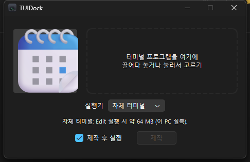
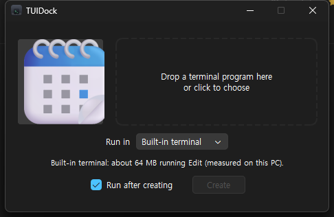

다운로드Download | GitHub | English
터미널 프로그램을 독립 앱으로Turn terminal programs into desktop apps
TUI 프로그램(lazygit, 직접 만든 도구 …)에 아이콘과 독립 창을 붙인다. macOS에서는 Dock·Cmd+Tab, Windows에서는 시작 메뉴·작업표시줄·Alt+Tab에서 다른 앱처럼 연다. 생성기는 앱을 만들거나 아이콘을 바꿀 때만 켜면 된다. Give a TUI program (lazygit, your own tool …) its own icon and window. Open it like any other app from the Dock and Cmd+Tab on macOS, or Start, the taskbar and Alt+Tab on Windows. Open the generator only when creating an app or changing its icon.






TUIDock.dmg — 열어서 TUIDock을 Applications로 끌어다 놓는다.Open it and drag TUIDock to Applications.
또는 터미널에서(tuidock 명령까지 설치, 같은 명령으로 업데이트):Or from the terminal (also installs the tuidock command; run again to update):
curl -fsSL https://zidell.github.io/tuidock/install.sh | bash
macOS 14 이상 · Apple Silicon·Intel · 터미널·아이텀·고스티macOS 14+ · Apple Silicon & Intel · Terminal, iTerm2, Ghostty
TUIDock-windows-x64.zip — 압축을 풀고 tuidock.exe를 실행한다. Windows 10 1809 이상 x64, 자체 터미널 포함.Extract and run tuidock.exe. Windows 10 1809+ x64, with a built-in terminal.
아이콘을 고르고 실행 파일을 놓은 뒤 제작을 누른다. 시작 메뉴의 TUIDock 폴더에 바로가기가 생기고, 제작 후 실행을 켜면 창이 열린다. 영구 작업표시줄 고정은 바로가기를 오른쪽 클릭해 직접 한다. 로그인 자동 실행은 등록하지 않는다.Choose an icon, drop an executable and click Create. A shortcut appears in the TUIDock folder in Start; Run after creating opens its window. Right-click the shortcut to pin it to the taskbar. Login Startup is not enabled.
또는 PowerShell에서 설치·업데이트한다. 사용자 프로그램 폴더에 설치하고 CLI 경로를 사용자 PATH에 추가한다(관리자 권한 불필요):Or install/update from PowerShell. Installs in your user programs folder and adds the CLI to your user PATH (no administrator required):
irm https://zidell.github.io/tuidock/install.ps1 | iex
업데이트 전에 만든 앱의 실행 창을 닫는다. 설치 후 새 터미널에서도 tuidock 명령을 쓸 수 있다.Close running generated apps before updating. After installation, tuidock is also available in new terminals.
Windows 빌드는 서명이 없어 SmartScreen에서 추가 정보 → 실행이 필요할 수 있다. 자세한 설정·단축키·빌드는 README를 참고한다.The Windows build is unsigned; SmartScreen may require More info → Run anyway. See the README for settings, shortcuts and building.
매일 쓰는 터미널 도구가 탭 사이에 섞여 있으면 찾기 어렵고, 앱 전환으로 바로 갈 수도 없다. 독립 앱이면 아이콘을 눌러 열고, macOS의 BetterTouchTool이나 Windows의 AutoHotkey로 “캘린더 열기·앞으로 가져오기” 같은 단축키를 붙일 수 있다. Terminal tools get lost among tabs, and app switching cannot take you straight to them. As separate apps, they can open from an icon or an “open calendar / bring to front” shortcut using BetterTouchTool on macOS or AutoHotkey on Windows.
터미널 캘린더(calendar-tui)를 만들면서 이걸 Dock에서 여는 실행기를 붙였는데, 도구마다 만들 게 아니라 아무 프로그램이나 감싸는 생성기로 떼어 낸 것이 TUIDock이다. While building a terminal calendar (calendar-tui) I wrote a launcher to open it from the Dock — TUIDock is that launcher turned into a generator for any program.
기본 실행기는 자체 터미널이다. 실측 메모리는 macOS에서 창 1200×900pt 기준 약 43~46MB, Windows에서 Microsoft Edit 실행 시 약 64MB였다. 프로그램과 창 크기에 따라 달라진다. macOS에서는 설치된 외부 터미널도 고를 수 있다. The built-in terminal is the default. Measured memory was about 43–46MB for a 1200×900pt window on macOS, and about 64MB running Microsoft Edit on Windows. Usage varies with the program and window size. On macOS, installed external terminals are also available.
macOS에서는 실행기 .app, Windows에서는 시작 메뉴 바로가기를 만든다. 열면 프로그램을 독립 터미널 창에 실행하고 실행기가 함께 동작한다. 프로그램을 정상 종료하면 창과 실행기도 끝난다. 실행 파일은 원래 경로를 참조하므로 다시 빌드해도 앱을 새로 만들 필요가 없다.
Creates a launcher .app on macOS or a Start shortcut on Windows. Opening it runs your program in its own terminal window, with the launcher alongside it. A normal program exit closes the window and launcher. The executable stays at its original path, so rebuilding it needs no new app.
Cmd+W는 가리기, Cmd+Q는 종료다. Windows: 앱별 시작 메뉴 바로가기·작업표시줄 아이콘·Alt+Tab 항목. 같은 앱을 다시 열면 기존 창을 앞으로 가져온다.macOS: a separate Dock icon and Cmd+Tab entry; Cmd+W hides and Cmd+Q quits. Windows: a Start shortcut, taskbar icon and Alt+Tab entry per app; opening it again brings its existing window forward.Cmd+,, Windows Ctrl+,. Windows 복사·붙여넣기는 Ctrl+Shift+C/V이며, 그 밖의 Ctrl 조합은 프로그램이 받는다.Built-in terminal settings: Cmd+, on macOS, Ctrl+, on Windows. Windows copy/paste uses Ctrl+Shift+C/V; other Ctrl combinations reach your program.두 플랫폼에서 tuidock 명령을 쓴다. 아래 예는 설치 스크립트로 PATH를 설정한 경우다. ZIP만 풀었다면 Windows에서 .\tuidock.exe로 실행한다.Both platforms provide tuidock. Examples assume the install script added it to PATH; with only an extracted ZIP, use .\tuidock.exe on Windows.
tuidock <실행 파일program> [이모지emoji] [옵션options]
실행 파일program | 경로나 PATH의 명령 이름(htop). 셸 alias는 안 된다A path or a command name on PATH (htop). Shell aliases don't work |
이모지emoji | 아이콘. 같은 이름 앱이 있으면 기존 아이콘을 유지한다. 새 앱에서 생략하면 macOS는 임의 이모지, Windows는 이름 첫 글자를 쓴다The icon. An existing app keeps its icon. For a new app without one, macOS picks an emoji; Windows uses the first letter |
--name | 앱 이름(기본: 파일 이름 첫 글자만 대문자로, htop → Htop)App name (default: the file name capitalized, htop → Htop) |
--icon | 이모지 대신 이미지 아이콘(PNG·JPG, macOS ICNS·Windows ICO)An image icon instead of an emoji (PNG, JPG; ICNS on macOS, ICO on Windows) |
--arg | 실행 인자(여러 번)Program argument (repeatable) |
--terminal | 기본 builtin(자체 터미널). macOS는 terminal·iterm2·ghostty도 지원. 생략하면 기존 앱의 선택을 유지Defaults to builtin. macOS also supports terminal, iterm2 and ghostty. Omit to keep an existing app's choice |
--no-dock / --no-shortcut | macOS: Dock 고정 생략. Windows: 시작 메뉴 바로가기 생략macOS: skip Dock pinning. Windows: skip the Start shortcut |
--help | 도움말(make·install 등 전체 옵션)Help (all options, including make and install) |
예:Examples:
tuidock htop 😁 # PATH의 명령 이름# a command on PATH tuidock ~/Sites/foo/bin/foo 🦊 # 경로# a path tuidock foo # 이모지를 빼면 아무거나# no emoji: a random one
앱을 /Applications에 넣고 Dock에 고정한다. 실행 파일은 복사하지 않고 그 경로를 실행하므로, 프로그램을 다시 빌드해도 앱은 그대로다. 같은 이름으로 다시 만들면 덮어써서 빌드 스크립트에 넣어 두기 좋다.
It installs the app in /Applications and pins it to the Dock. The executable isn't copied — the app runs it from its path — so rebuilding your program needs no new app. Making it again with the same name overwrites it, so it fits in a build script.
tuidock edit.exe 📝 tuidock make --command C:\tools\my-tui.exe --name "My TUI" --emoji 🦊 tuidock run --command edit.exe --arg README.md tuidock remove "My TUI"
make는 시작 메뉴에 등록하고, run --command는 제작 없이 바로 실행한다. 정의·아이콘·설정은 %APPDATA%\tuidock\<id>에 저장한다. 같은 이름으로 다시 제작하면 기존 앱을 갱신한다.make creates a Start shortcut; run --command launches directly without creating one. Definitions, icons and settings live in %APPDATA%\tuidock\<id>. Creating the same name again updates the existing app.
아래 자동화 권한은 macOS의 외부 터미널에만 해당한다. Windows 설치는 관리자 권한 없이 사용자 폴더에 한다.The automation permissions below apply to external terminals on macOS. Windows installs in user folders without administrator access.